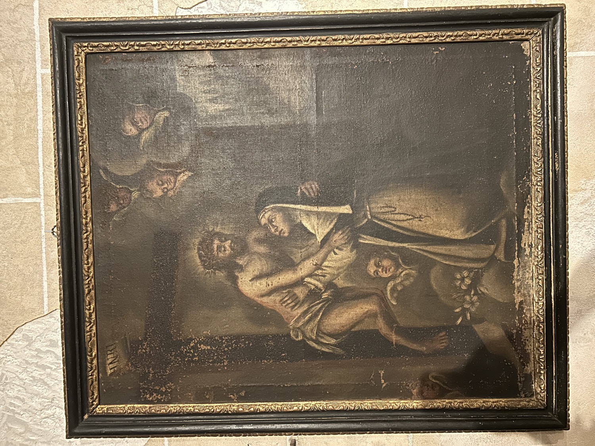

Pintura que representa una visión mística en la que una monja recibe la aparición del Cristo de la Pasión, que se desclava de la cruz para abrazarla. El lirio en el suelo es un símbolo de la pureza de la religiosa.
No podemos confirmar con total seguridad la identidad de la religiosa, pero el hábito grisáceo con escapulario blanco, toca negra y un largo rosario oscuro sugieren que se trata de una dominica. La identificación más probable es la de santa Catalina de Siena (1347-1380), una terciaria dominica que fue una de las grandes místicas de su tiempo, por lo que fue nombrada Doctora de la Iglesia, y que es representada a menudo en escenas de unión mística con el Cristo de la Pasión debido a sus visiones.
Otra posible identificación es la de santa Catalina de Ricci (1522-1590), una monja dominica famosa por sus visiones de la Pasión de Cristo. En una de estas visiones, mientras se encontraba en su celda del convento, la figura de Cristo se desclavó de la cruz de su altar privado y la abrazó.